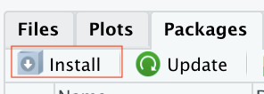

1 What is Pmetrics?
Pmetrics is a population modeling and simulation package for R. It can model data using nonparametric and parametric approaches. Some excellent articles discussing the differences, strengths, and limitations of both approaches are below.
- Goutelle, Sylvain, Jean‐Baptiste Woillard, Thierry Buclin, Laurent Bourguignon, Walter Yamada, Chantal Csajka, Michael Neely, and Monia Guidi. “Parametric and Nonparametric Methods in Population Pharmacokinetics: Experts’ Discussion on Use, Strengths, and Limitations.” The Journal of Clinical Pharmacology 62, no. 2 (February 2022): 158–70. https://doi.org/10.1002/jcph.1993.
- Goutelle, Sylvain, Jean‐Baptiste Woillard, Michael Neely, Walter Yamada, and Laurent Bourguignon. “Nonparametric Methods in Population Pharmacokinetics.” The Journal of Clinical Pharmacology 62, no. 2 (February 2022): 142–57. https://doi.org/10.1002/jcph.1650.
- Guidi, Monia, Chantal Csajka, and Thierry Buclin. “Parametric Approaches in Population Pharmacokinetics.” Journal of Clinical Pharmacology 62, no. 2 (February 2022): 125–41. https://doi.org/10.1002/jcph.1633.
2 How do I get Pmetrics?
It’s easy and all free!
- Install R
- Install Rstudio, from posit.
- Install the devtools package into Rstudio. The easiest way is to click the Install button on the Packages tab, and search the CRAN repository for devtools.

- Type the following into the R console (lower left window):
devtools::install_github("LAPKB/Pmetrics") - Launch Pmetrics in Rstudio with
library(Pmetrics) - Run
PMbuild()to download necessary components and install them. It might be many components, depending on your system.
That’s it!
3 How do I get help?
Head on over to our Discussion board at Github.
4 How do I start using Pmetrics?
A good place to start is to run PM_tutorial(), which will install an Examples folder at your chosen location, which will contain sample data, models, and a script to get you started building and simulating from population models. Also have a look at the Articles on this website. All functions are extensively documented, most with examples, which can be seen in the Reference section of the website. There are also more tutorials and references on our Laboratory of Applied Pharmacokinetics and Bioinformatics website.